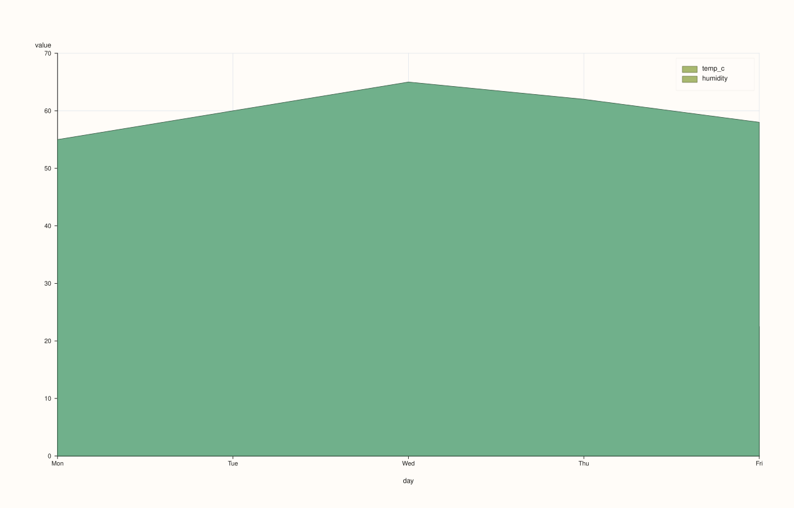
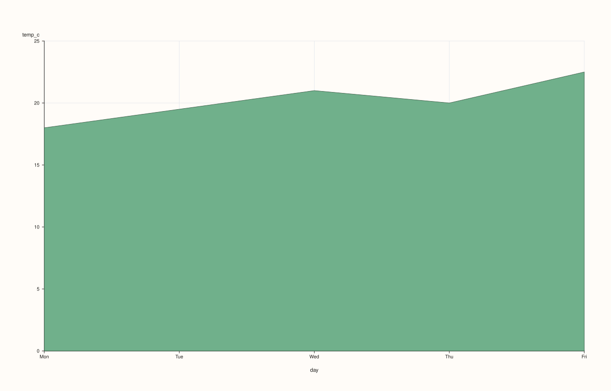
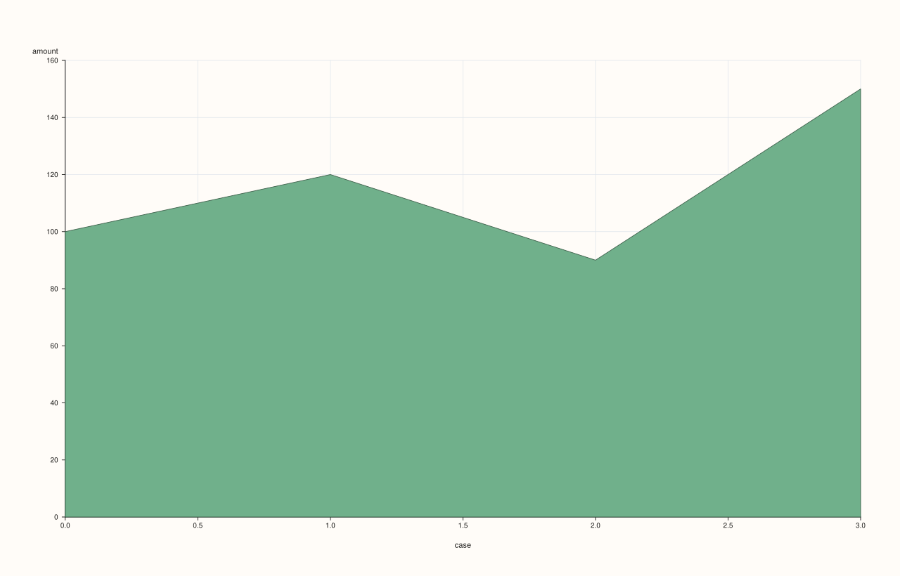

DataFramePlotAccessor::area¶
Back to DataFramePlotAccessor API Reference
Signatures¶
DataFramePlotAccessor::area(std::string_view y_feature,
std::optional<std::string_view> x_feature = std::nullopt) const -> pluss::pl::Studio
DataFramePlotAccessor::area(std::string_view y_feature,
std::optional<std::string_view> x_feature,
const AreaPlotOptions& options) const -> pluss::pl::Studio
DataFramePlotAccessor::area(pluss::msharp::RangeView::Of<std::string_view> y_features,
std::optional<std::string_view> x_feature = std::nullopt) const -> pluss::pl::Studio
DataFramePlotAccessor::area(pluss::msharp::RangeView::Of<std::string_view> y_features,
std::optional<std::string_view> x_feature,
const AreaPlotOptions& options) const -> pluss::pl::Studio
DataFramePlotAccessor::area(std::initializer_list<std::string_view> y_features,
std::optional<std::string_view> x_feature = std::nullopt) const -> pluss::pl::Studio
DataFramePlotAccessor::area(std::initializer_list<std::string_view> y_features,
std::optional<std::string_view> x_feature,
const AreaPlotOptions& options) const -> pluss::pl::Studio
What It Does¶
Same shape as line() — one trace per y-feature over a shared x-axis, same
three overload families, same x-axis-resolution rules — but each trace is filled down to
the baseline instead of drawn as a bare line, and multiple y-features are drawn as
independently overlapping filled regions on the same axes (not stacked; for a stacked
composition view, see area_stacked()).
See line() for the full explanation of the shared mechanics — this page only
covers what’s specific to area().
Parameters¶
y_feature / y_features
Same as line(): one or more numeric features, each drawn as its own filled
area trace, overlapping rather than stacked. At least one is required — an empty list
throws "DataFrame::plot().area: at least one y feature is required".
x_feature (std::optional<std::string_view>, default std::nullopt)
Same three-step resolution as line().
options (AreaPlotOptions)
cpp struct AreaPlotOptions { double alpha{0.88}; double line_width{1.3}; };
alpha defaults noticeably lower than line()’s 1.0 — filled regions
default to slightly translucent so overlapping areas from multiple y-features stay
visually distinguishable instead of one fully opaque area hiding another.
Returns¶
pluss::pl::Studio
A figure with one pane containing one filled area trace per requested y-feature.
Examples¶
Example 1. A single feature, explicit x-axis.
using namespace pluss::table;
auto sales = DataFrame({
{"month", Thread(pluss::make_note({"Jan", "Feb", "Mar", "Apr"}))},
{"amount", Thread(pluss::make_series({100.0, 120.0, 90.0, 150.0}))},
{"cost", Thread(pluss::make_series({60.0, 80.0, 55.0, 95.0}))},
});
auto chart = sales.plot().area("amount", "month");
chart.show();

Example 2. Two y-features drawn as overlapping (not stacked) filled areas — where they
overlap, the default alpha = 0.88 keeps both visible rather than one fully occluding the
other.
auto chart = sales.plot().area({"amount", "cost"}, "month");
chart.show();

Example 3. The same multi-feature call via a reusable RangeView.
std::vector<std::string_view> y_names{"amount", "cost"};
auto chart = sales.plot().area(pluss::msharp::RangeView::Of<std::string_view>(y_names), "month");
chart.save_pdf("sales_area.pdf");

Example 4. No x_feature: falls back to the frame’s own row labels, titled "case" — see
line()’s Example 3 for the full explanation.
auto chart = sales.plot().area("amount");

Example 5. An explicit AreaPlotOptions, raising opacity toward fully opaque and
thickening the outline.
AreaPlotOptions area_options;
area_options.alpha = 1.0;
area_options.line_width = 2.0;
auto chart = sales.plot().area("amount", "month", area_options);
chart.show();
Example 6. Multiple y-features with an explicit options object.
auto chart = sales.plot().area({"amount", "cost"}, "month", area_options);
Notes¶
Shares every mechanic described on
line()’s page except the filled trace shape and theAreaPlotOptionsstruct’s lower defaultalpha.Multiple y-features overlap rather than stack — see
area_stacked()for the composition (accumulating) variant.At least one y-feature is required.
Returns a
pluss::pl::Studio— seeline()’s important callout for how to view or save the result.
See Also¶
DataFramePlotAccessor::area_stacked: the accumulating, composition-focused sibling of this method.DataFramePlotAccessor::line: the unfilled counterpart, and the canonical explanation of this accessor’s shared mechanics.